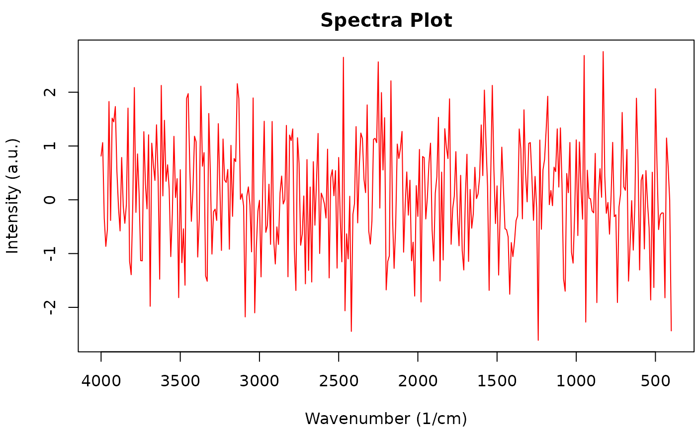
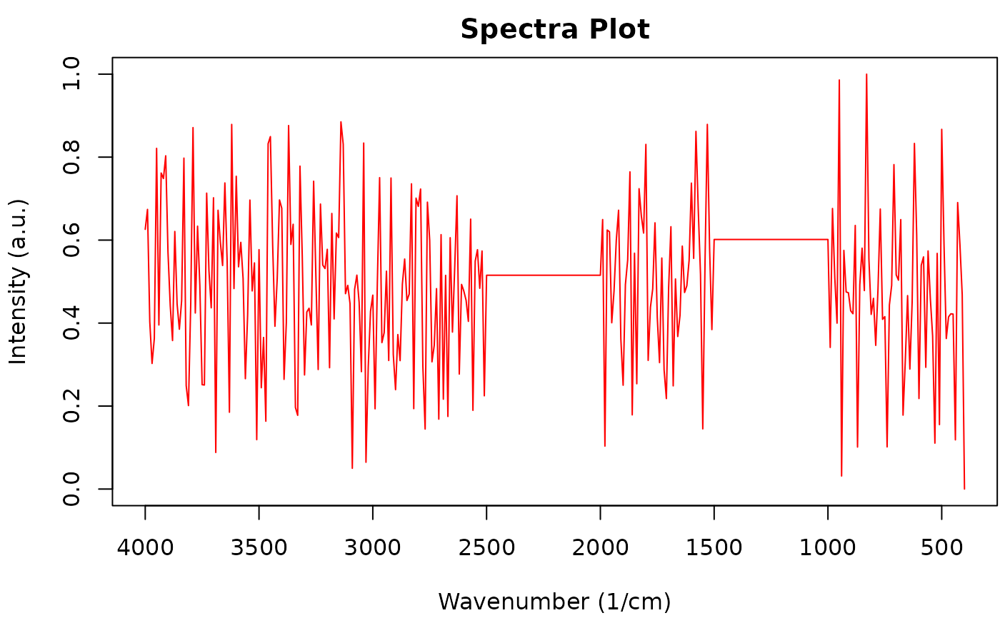

restrict_range() restricts wavenumber ranges to user specified values.
Multiple ranges can be specified by inputting a series of max and min
values in order.
flatten_range() will flatten ranges of the spectra that should have no
peaks.
Multiple ranges can be specified by inputting the series of max and min
values in order.
Usage
restrict_range(x, ...)
# S3 method for default
restrict_range(x, ...)
# S3 method for OpenSpecy
restrict_range(x, min, max, make_rel = TRUE, ...)
flatten_range(x, ...)
# S3 method for default
flatten_range(x, ...)
# S3 method for OpenSpecy
flatten_range(x, min = 2200, max = 2400, make_rel = TRUE, ...)Arguments
- x
an
OpenSpecyobject.- min
a vector of minimum values for the range to be flattened.
- max
a vector of maximum values for the range to be flattened.
- make_rel
logical; should the output intensities be normalized to the range [0, 1] using
make_rel()function?- ...
additional arguments passed to subfunctions; currently not in use.
Value
An OpenSpecy object with the spectral intensities within specified
ranges restricted or flattened.
See also
conform_spec() for conforming wavenumbers to be matched with
a reference library;
adj_intens() for log transformation functions;
min() and round()
Examples
test_noise <- as_OpenSpecy(x = seq(400,4000, by = 10),
spectra = data.frame(intensity = rnorm(361)))
plot(test_noise)

restrict_range(test_noise, min = 1000, max = 2000)
#> wavenumber intensity
#> <num> <num>
#> 1: 1000 0.7779144
#> 2: 1010 0.4108821
#> 3: 1020 0.7862717
#> 4: 1030 0.4993344
#> 5: 1040 0.3027464
#> ---
#> 97: 1960 0.5593439
#> 98: 1970 0.4760214
#> 99: 1980 0.7164056
#> 100: 1990 0.7209565
#> 101: 2000 0.1502945
#>
#> $metadata
#> x y license col_id file_id
#> <int> <int> <char> <char> <char>
#> 1: 1 1 CC BY-NC intensity 5ef3b78d1f815177bb927948a30ed9d1
flattened_intensities <- flatten_range(test_noise, min = c(1000, 2000),
max = c(1500, 2500))
plot(flattened_intensities)
